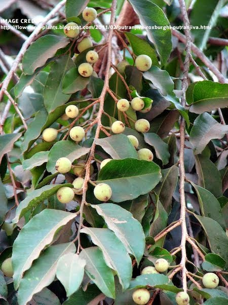

Overview of Putrajivaka
Putrajivaka – Putrajiva roxburghii is an Ayurvedic herb used for treating various conditions such as eye disorders, aphrodisiac needs, filariasis, excessive thirst, and burning sensations.
Botanical Information
- Botanical Name: Putrajiva roxburghii Wall
- Family: Euphorbiaceae
Vernacular Names
- Bengali: Jiya Punta
- Gujarati: Putrajivak
- Hindi: Jiyapota, Pitaujiya
- Kannada: Putrajiva
- Tamil: Irukollai
- Telugu: Putrajiva
Classification
- Bhavprakash Nighantu: Vatadi Varga
- Raja Nighantu: Prabhadradi Varga
- Kaiyadeva Nighantu: Aushadhi Varga
Morphology
External Morphology: A small to medium tree.
Useful Parts: Seeds, leaves (rare)
Phytoconstituents
- Putranjik Acid
- Roxburholone
- Putrjivadione
- Putrjivoside
- Putric Acid
- Putraflavone
Rasa Panchak
- Rasa: Madhur (Sweet), Katu (Pungent)
- Guna: Guru (Heavy), Pichhila (Slimy)
- Virya: Shita (Cool)
- Vipaka: Madhur (Sweet after digestion)
Action
Action: Vatapittahara (Reduces vitiated Vata and Pitta doshas)
Therapeutic Indications
- Chakshusya (Good for eyes)
- Vrushya (Aphrodisiac)
- Slipadanashana (Treats filariasis)
- Trishnahara (Treats excessive thirst)
- Dahahara (Decreases burning sensations)
Therapeutic Uses
- Jwara: Decoction of leaves and fruit is useful in fever.
- Shirahshoola: Seeds kernels paste applied in headaches.
- Visphotaka: Seeds paste as an external application to treat pustules and boils.
- Pumsanvanana: Root, Vishnukranta, and Shivalingi seeds are useful in the first 8 days of pregnancy.
Dosage
- Powder: 3 to 5 gm
- Leaves Juice: 10-20 ml
- Decoction: 40-80 ml
Formulations
No specific formulations listed.
Adverse Effects
Adverse Effects: Not known